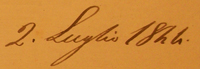

|
|
 |
2 luglio 1844
NICCHIO
|
L'ordine è quello di entrata fra i canapi e il grassetto indica la vincitrice
In questo colore le contrade estratte a sorte
Cliccando sui nomi dei fantini e sulle immagini, si apriranno le relative pagine
(Abbreviazioni: B=baio; G=grigio; I=isabella; M=morello; R=roano; S=sauro)
* Fantino esordiente
GIUDICI DELLA MOSSA: Alessandro Mocenni e G.Battista Perini Brancadori
CAPITANO VITTORIOSO: Andrea Coppi
PRIORE VITTORIOSO: Celio Perini Brancadori
La contrada non vinceva dal 17 agosto 1841
Unico Palio vinto da questo fantino


La mattina di S.Pietro alle 8 antimeridiane furono dati i cavalli alle Contrade che correvano cioè Civetta, Chiocciola, Drago, Montone, Nicchio, Oca, Onda, Pantera, Selva e Torre.
Alla prova della mattina del primo luglio Brandino detto Ghiozzo che era sulla cavalla sfrenata della Pantera che a niuno era riescito piegarla, circa S.Martino sentendosi portar via gli diede una stratta (oggi si direbbe strattone) e messa in terra, nella caduta il Ghiozzo si ruppe il braccio destro; non vi accaddero altre disgrazie.
Andate alle mosse le Contrade circa alle 23 scapparono di gran fuga il Nicchio [fantino Bicchierino], Oca [fantino Pierino Rosso] e Selva [fantino Partino Maggiore] e battuto il petto del cavallo al canape rovesciarono in terra, ed il cavallo del Nicchio passò di sotto il canape; ripreso e risalito di nuovo si presentarono e caduto il canape principiò la corsa quale riuscì delle più garose.
Scappato prima il Drago [fantino Saltatore] fu subito passato dall'Onda dove correva il giovane Bonino ed alla piegata di S.Martino formavano un gruppo l'Onda, l'Oca, Chiocciola [fantino Campanino], Drago, Montone [fantino Spavento] e la Selva. L'Onda tratteneva con nerbo l'Oca che contrastava a mezzo cavallo e teneva ancor dietro le altre Contrade che passar volevano dall'altra parte. Alla seconda girata a S.Martino cadde l'Oca per virtù dell'Onda e Chiocciola, e all'Onda datogli giù il cavallo e rimessogli si avvantaggiò la Chiocciola che subentrò prima per lampo a S.Martino e per la terza volta si vide primiera l'Onda. Alla Costarella entrò primo il Nicchio scappato ultimo senza nessun contrasto il quale non poté farsi neppure dall'Onda perché il cavallo malato era del tutto fiaccato dal continuo contrasto e non più passato vinse il Nicchio, di miglior cavallo delle altre, di 3 cavalli staccati 2ª l'Onda e 3ª era entrata la Torre [fantino Gobbo Saragiolo] che pur essa con valore contrastò il passo.
I nicchiaioli contenti per la riportata vittoria fecero in lode del garzoncello fantino Pietro Tarquini detto Bicchierino due sonetti che vennero da loro distribuiti per la città in occasione del consueto giro ai protettori, abitanti e geniali, e fece buone mance da ogni sorta di persone.
(Da "Memorie di Palio a cavallo tre secoli" a cura di Paolo Tertulliano Lombardi)


zucchino originale indossato da Bicchierino durante il suo Palio vittorioso
(foto di Andrea Mari)


|
|
|